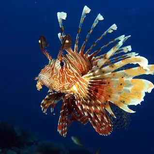
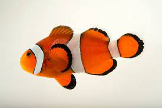

There are many fish in the world but only some can be seen in a zoo.
Lion Fish

In densely invaded areas, lionfish can consume 460,000 prey fish per acre per year.
Lionfish have been found to eat more than 40 different species of reef fishes
They have venomous fin spines.
Clown Fish

Clownfish eggs can be hatched anytime during the year.
A layer of mucus on the clownfish's skin makes it immune to the fish-eating anemone's lethal sting.
What are some fun facts about clownfish for kindergarten?
Clownfish migrate to deeper waters during the winter to stay warm
Big-Eye Trevally
The bigeye trevally is one of the larger members of Caranx, growing to a maximum recorded size of 120 cm in length and 18.0 kg in weight.
The giant trevally is an apex predator and is known to hunt in schools or individually
It is similar to most other jacks in having a compressed, oblong body, with the dorsal profile slightly more convex than the ventral profile, particularly anteriorly.